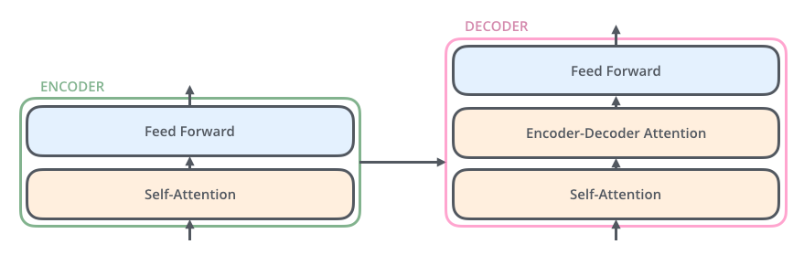
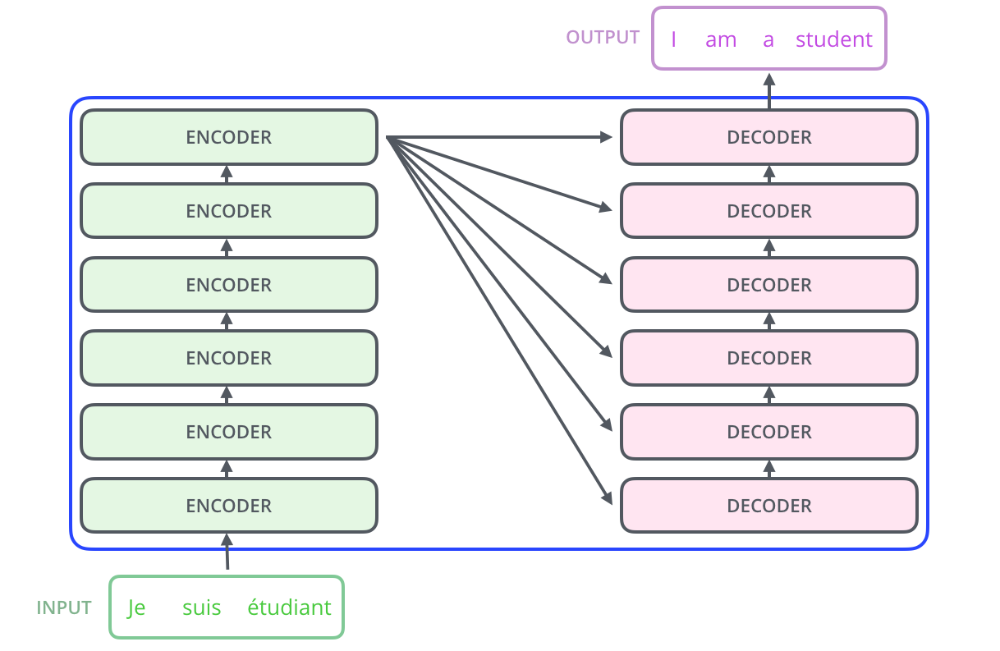
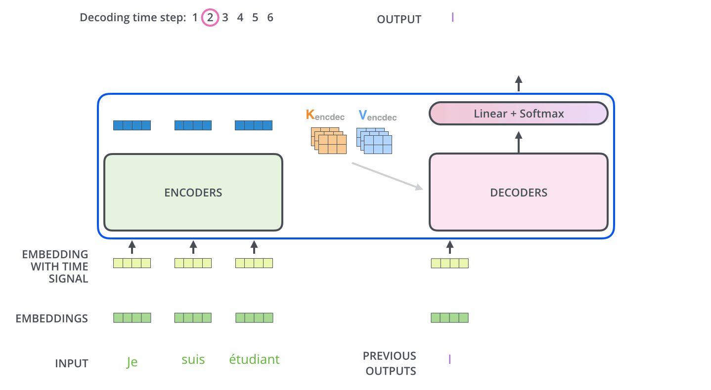

TransformerAn Attention-Based Deep Learning Model
01 · BACKGROUND
Motivation
Before 2017, RNNs and LSTMs were widely used in natural language processing. However, they process tokens sequentially, making parallel computation difficult and increasing training time for long sequences.
RNNs also struggle to learn long-range dependencies because of vanishing gradients. LSTMs improve memory through gates and memory cells, but their processing remains sequential.
Transformer was introduced in Attention Is All You Need (2017) to process sequences more efficiently without the recurrence used by RNNs and LSTMs.
RNN / LSTM Sequential
Self-Attention Direct connections
02 · THE ORIGINAL MODEL
Core idea and architecture
The key innovation was not inventing attention, but making attention the central component instead of recurrence. Self-Attention lets tokens exchange information directly with relevant tokens in the sequence; many positions can be processed in parallel during training.

The Decoder also attends to the source
The arrow carries Encoder representations into Encoder–Decoder Attention. Decoder Self-Attention uses a causal mask; both attention blocks are multi-head in the original model. Residual connections and LayerNorm are omitted here.
Image: Jay Alammar · The Illustrated Transformer · CC BY-NC-SA 4.0.
- Encoder
- Receives the input sentence and builds a context-aware representation for each token.
- Decoder
- Uses the Encoder output and preceding target tokens to predict the next token.
- Multi-Head Attention
- Models different relationships between tokens at the same time. The original base model uses eight heads.
- Feed-Forward Network
- Transforms each token representation after attention, using the same weights across positions within a layer.
- Positional Encoding
- Adds order information because attention alone does not represent token positions.
See the six-layer stacks

Six layers on each side. The final Encoder output provides context to every Decoder layer.
Image: Jay Alammar · CC BY-NC-SA 4.0.
03 · SELF-ATTENTION
Working principle
In “The cat is sleeping because it is tired.”, “it” refers to “the cat”. Self-Attention lets the model compare “it” with other tokens to build a more context-aware representation.
Each token is transformed into three vectors through learned projections:
- Q Query
- Represents the information being sought.
- K Key
- Helps assess how relevant information is.
- V Value
- Contains the information to be aggregated.
Attention(Q, K, V) = softmax(QKT / √dk)V
The model compares Q with each K to compute relevance scores, applies Softmax to turn scores into weights, then takes a weighted sum of the V vectors. Multi-Head Attention performs this process across multiple heads to learn different relationships.
Select a token to explore its connections
Token “it” · Head 1 / 8
Thicker lines indicate larger weights. These illustrative values do not come from a trained model; a high attention weight alone does not prove that a model understands a relationship.
Inspect Q, K, V and the output for the selected token
In the Decoder, Self-Attention uses a causal mask to prevent access to future tokens. During inference, tokens are still generated one at a time.
Translation, one token at a time
Watch “Je suis étudiant” become “I am a student”. Each predicted token becomes part of the Decoder input for the next step.

Static preview · play to follow the decoding loop.
- Encode the source
The Encoder builds source representations once.
- Predict the next token
The Decoder attends to the source and earlier target tokens; Linear + Softmax produces probabilities.
- Feed the token back
Append the chosen token and repeat until an end-of-sequence token.
Image: Jay Alammar · The Illustrated Transformer · CC BY-NC-SA 4.0.
Illustrate the Decoder mask
Each row can attend only to its own position and earlier positions. Future scores are set to −∞ before Softmax.
04 · TRADE-OFFS
Advantages and limitations
Advantages
- Better support for parallel computation during training than RNNs and LSTMs.
- Direct connections between distant tokens.
Limitations
- Standard Self-Attention has computation and memory costs that grow quadratically with sequence length.
- Large models require substantial computing resources.
Every token attends to every token
n × n8 tokens64 position pairs
Double the sequence length → four times as many attention pairs.
05 · USE CASES